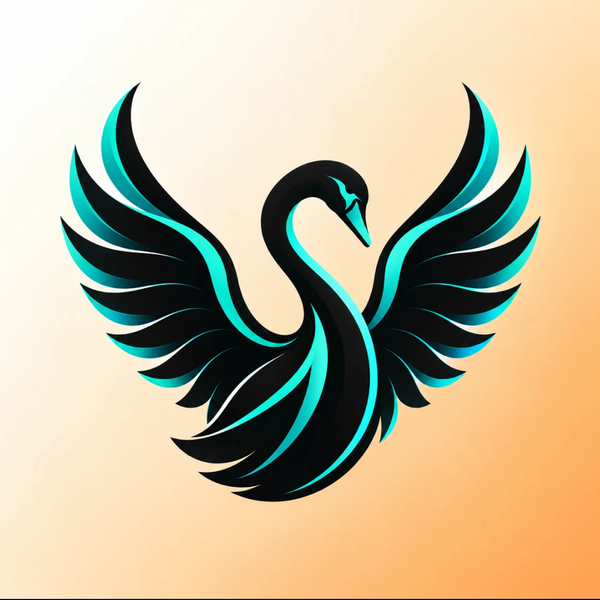

The project began as a joke and became useful when one assumption was discarded.
The first description was a single sentence: keep the camera always on, and when you open and close your hand like a duck's beak, the page you are looking at is captured; open your hand in front of another laptop and the screen appears there; snap your fingers and it takes a screenshot.
Two things in that sentence turned out to be wrong, and finding out why shaped everything that followed.
A finger snap was to trigger screenshots. In practice any sharp sound triggered it — a fist landing on a desk, a cupboard closing, a keyboard being struck hard. Attempts to require a hand in frame and a snap sound reduced false positives without eliminating them, because a hand is usually in frame when you are sitting at a desk.
The replacement was a two-handed "T" shape, borrowed from sports. That failed for a different and more interesting reason: hand-tracking models degrade sharply when two hands overlap, because the joints of one occlude the other. The model would report one hand, or two hands with implausible geometry, and never stably.
The gesture that survived is the peace sign — two extended fingers, one hand, no overlap, no audio. It is recognised by the same mechanism as the other two gestures, which is the real reason it works: it is not a special case.
The original idea assumed screen sharing. Mid-project the requirement was restated much more precisely, and it changed the architecture:
That is two different products wearing one gesture. A link can genuinely move: only a URL travels, the tab closes on the sender and the real page opens on the receiver. An application cannot move at all — a running process is bound to its machine — so the best available approximation is to send a picture of its window while it keeps running where it is.
Recognising these as different operations, rather than one operation with a special case, is the single most important design decision in the project.
| A link | An application window | |
|---|---|---|
| What travels | A URL — a few dozen bytes | Encoded video frames |
| Fidelity | Perfect; it is the real page | Lossy, and always will be |
| On the sender | The tab closes — it has gone | The app keeps running |
| On the receiver | Opens in their browser, with their logins | A picture they cannot interact with |
| Ongoing cost | None after arrival | Continuous bandwidth |
| Latency | One round trip | Continuous, and visible |
The consequence is that Samcast always prefers to move. When the frontmost application is a recognised browser, the page is handed over as a link. Only when it is not — Figma, Xcode, a spreadsheet, Keynote, Freeform — does it fall back to mirroring.
This preference is not a performance optimisation. A link arriving in the recipient's own browser is a categorically better outcome: they are logged into their own accounts, the text is selectable, the page is scrollable, and nothing continues to consume the network afterwards.
| Gesture | Meaning | Implementation |
|---|---|---|
| Closed hand (fist) | Offer what I am looking at | 0 of 4 fingers extended |
| Open hand | Give it to me, here | 4 of 4 fingers extended |
| Peace sign | Screenshot to Desktop | Index and middle only |
The interaction model has one rule that everything else follows from: the device that receives is the device that can see your hand. There is no device picker, and there cannot be one, because the gesture is the selection. Walking to a machine and opening your hand at it is unambiguous in a way that choosing "MacBook Pro (2)" from a list is not.
This also produces the security property that matters most: nothing can be pushed onto a device. A sender offers; a receiver must physically gesture to accept. There is no code path that delivers content to a device that has not asked.
The decision-making is kept free of every Apple framework, so it can be tested without a camera, a network or a screen.
The codebase is organised as a hexagonal architecture. A core module contains all the logic that decides things; platform modules contain all the code that touches hardware. The core defines protocols — "ports" — and the platform modules implement them.
SamcastCore pure Swift, Foundation only, zero platform imports
├── Gesture/ HandLandmarks · GestureClassifier · GestureDebouncer
├── Session/ SessionCoordinator · DeviceIdentity · TrustStore
│ PageRisk (live-meeting detection)
└── Ports/ HandTracker · ScreenSource · PeerTransport
SamcastPlatform the Apple adapters
├── VisionHandTracker AVFoundation + Vision
├── ScreenCaptureKitSource SCStream window capture
├── H264Encoder VideoToolbox compression
├── H264DisplayLayer AVSampleBufferDisplayLayer playback
├── MultipeerTransport MultipeerConnectivity
└── BrowserLink AppleScript / Apple EventsThe three ports are deliberately small:
protocol HandTracker {
var onHands: (([HandLandmarks], TimeInterval) -> Void)? { get set }
func start() throws
func stop()
}
protocol ScreenSource {
var onFrame: ((Any, TimeInterval) -> Void)? { get set }
func startCapture() throws
func stopCapture()
func captureStill() async throws -> URL
}
protocol PeerTransport {
var delegate: PeerTransportDelegate? { get set }
var connectedPeers: [Peer] { get }
func start()
func stop()
func send(_ message: ControlMessage, payload: String?, to peer: Peer)
}Any
ScreenSource.onFrame passes an opaque Any rather than a CVPixelBuffer. The core must not import CoreVideo, and a pixel buffer is a platform type. The adapter downcasts on receipt. This is the one place where type safety is traded for portability, and it caused a real bug — see §24.
The payoff is concrete: SamcastCore compiles and its 81 checks run on any Swift toolchain, including a machine with only Command Line Tools installed and no Xcode. It also meant the Windows bridge could reuse the core by path dependency rather than by copying it, which is what stops the two builds from drifting apart.
| File | Responsibility |
|---|---|
HandLandmarks.swift | Point2D, the 21 HandJoint cases, and a hand observation with a confidence |
GestureClassifier.swift | Geometry only — turns one frame of landmarks into a gesture |
GestureDebouncer.swift | Temporal smoothing; fires only when the stable gesture changes |
SessionCoordinator.swift | A pure reducer: state + input → new state + effects |
DeviceIdentity.swift | Persistent random name and UUID |
TrustStore.swift | Which peers have been approved |
PageRisk.swift | Recognises live meetings that must be confirmed first |
AppModel.swift | macOS orchestration — wires every adapter to the coordinator |
ReceiverModel.swift | The iOS equivalent |
SessionCoordinator is a pure function. It holds a state, accepts an input, mutates the state and returns a list of effects. It performs no I/O, which is why it can be exhaustively tested.
enum SessionState {
case idle
case armedSource // I have offered something
case casting(to: Peer) // I am sending to this peer
case receiving(from: Peer) // I am receiving from this peer
}The interesting transitions:
| State | Input | Effects | New state |
|---|---|---|---|
idle | closed hand | start capture, advertise | armedSource |
idle | open hand, someone offering | request cast, show remote | receiving |
idle | open hand, nobody offering | none | idle |
armedSource | closed hand again | stop capture, withdraw | idle |
armedSource | open hand, someone offering | withdraw, then request | receiving |
armedSource | peer requests | start streaming | casting |
Hand tracking is the input device. Everything about the interaction is shaped by what it can and cannot report reliably.
On Apple platforms, VNDetectHumanHandPoseRequest reports 21 joints per hand, each with a confidence value. The numbering is shared with MediaPipe, which is what made the Windows port a translation rather than a rewrite.
0 wrist
1–4 thumb CMC, MP, IP, tip
5–8 index MCP, PIP, DIP, tip
9–12 middle MCP, PIP, DIP, tip
13–16 ring MCP, PIP, DIP, tip
17–20 little MCP, PIP, DIP, tipThe adapter converts Vision's bottom-left origin to a top-left origin and hands the core a neutral struct. Missing joints — occluded or low confidence — are simply absent rather than zeroed, so the classifier can tell "not detected" from "at the origin".
The entire gesture vocabulary rests on one measurement: how many of the four non-thumb fingers are extended.
A finger is extended when its tip is further from the wrist
than its middle (PIP) joint.That is a comparison, not an absolute distance, which gives two properties for free:
The thumb is deliberately excluded. Its tip can be closer to or further from the wrist depending only on how the hand is rotated, so including it would make the count depend on wrist angle rather than on finger state. This is why the app counts to four, not five — a detail that was wrong in the first draft of the marketing site.
Classification order matters:
if index && middle && !ring && !little → peace
if extendedCount >= 4 → open hand
if extendedCount <= 0 → closed hand
otherwise → nothingPeace is tested first because it has two fingers extended and would otherwise fall through to "nothing". Three fingers extended is deliberately unrecognised — it is the most common transitional shape as a hand opens or closes, and assigning it a meaning would make every gesture ambiguous mid-motion.
Raw per-frame classification flickers. A hand closing passes through open, three-finger, two-finger and fist within a few frames, and the tracker's confidence wobbles throughout. Acting on raw frames produces several conflicting events per gesture.
GestureDebouncer requires a gesture to be held steadily for a hold duration (0.25–0.3 s) before it counts, and returns a value only on the frame where the stable gesture changes. Everything downstream therefore sees each gesture exactly once.
| Gesture | Intended for | Why it failed |
|---|---|---|
| Finger snap (audio) | Screenshot | Any sharp sound triggered it — desk taps, cupboards, keystrokes |
| Snap + hand in frame | Screenshot | A hand is almost always in frame at a desk, so it added nothing |
| Two-handed "T" | Screenshot | Hand tracking degrades badly when hands overlap and occlude each other |
| Peace sign | Screenshot | Works — one hand, no overlap, distinct finger count |
Two completely different mechanisms, depending on whether the far end is an Apple device.
The Apple build uses MCNearbyServiceAdvertiser and MCNearbyServiceBrowser with the service type quackcast, which registers the Bonjour service _quackcast._tcp. Sessions are created with encryptionPreference: .required, so macOS refuses to form an unencrypted session.
Underneath, Bonjour (mDNS) advertises the service on the local network. Browsing finds it, one side invites, the other accepts, and Apple establishes the transport — over the local Wi-Fi network, or peer-to-peer via AWDL when no network is shared.
This was verified directly rather than assumed. Browsing the network while the app ran produced:
$ dns-sd -B _quackcast._tcp
Timestamp A/R Flags if Domain Service Type Instance Name
15:20:12.814 Add 3 24 local. _quackcast._tcp. 239i3264d7gmk
15:20:12.814 Add 3 1 local. _quackcast._tcp. 239i3264d7gmk
15:20:12.814 Add 2 14 local. _quackcast._tcp. 23ld60czlsqmwInterface 14 is en0 — the Wi-Fi interface. The instance names are opaque strings chosen by MultipeerConnectivity; the human-readable device name travels inside the connection, not in the advertisement.
| Purpose | Protocol | Port | Scope |
|---|---|---|---|
| Apple discovery | mDNS / Bonjour | UDP 5353 | Multicast, link-local |
| Apple transport | MultipeerConnectivity | dynamic | Chosen by the framework |
| Bridge discovery | UDP broadcast | UDP 50505 | Subnet broadcast |
| Bridge transport | TCP | ephemeral | Advertised in the beacon |
Interfaces observed on the development machine:
lo0 index 1 loopback
en1 index 10
en0 index 14 Wi-Fi 192.168.1.32
awdl0 index 16 Apple Wireless Direct Link
utun0 index 18
bridge0 up, but no IP address assignedbridge0 interface, but it carries no IP address unless Thunderbolt Bridge is explicitly configured. Samcast never uses USB. If the cable route is wanted — for a location with no usable Wi-Fi — enabling Thunderbolt Bridge on both machines gives the interface a link-local address, and Bonjour will run over it.
The original idea assumed Bluetooth: "see if that app is installed on nearby bluetooth connected device". The finished product contains no Bluetooth code at all — no CoreBluetooth import, no central, no peripheral. This was verified by searching the entire codebase.
Discovery is Bonjour over Wi-Fi. That changes what "nearby" means, in ways worth stating plainly:
MultipeerConnectivity retains one genuine advantage: AWDL can form a direct device-to-device link with Wi-Fi switched on but joined to no network. The socket bridge cannot do this — it needs a real IP network, even if that is only a phone hotspot.
MultipeerConnectivity is a closed Apple framework over AWDL. A Windows PC cannot speak it, and no library exists that can. Reaching Windows therefore required replacing the entire transport with something both sides could implement from a specification.
Every peer broadcasts a JSON datagram every 2 seconds to the IPv4 broadcast address of each active interface, and listens on the same port.
{"qc":1,"id":"C0D6F8F9-…","name":"demo-mac","kind":"mac","port":49410}| Field | Meaning |
|---|---|
qc | Protocol version. A peer must ignore a version it does not implement. |
id | Stable per-install UUID. Trust is keyed on this — never the name, never the IP. |
name | Human-readable, display only. |
kind | mac · windowsPC · iPad · iPhone · unknown. |
port | The TCP port this peer is accepting connections on. |
A peer is considered lost after 8 seconds of silence — four missed beacons. Beacons carrying one's own id are ignored, because broadcast returns to the sender on most stacks.
Every TCP message is length-prefixed, so the stream can carry both small JSON and multi-hundred-kilobyte images:
┌────────────┬────────┬───────────────────┐
│ length │ type │ payload │
│ 4 bytes │ 1 byte │ length bytes │
│ big-endian │ │ │
└────────────┴────────┴───────────────────┘
type 0x01 control — UTF-8 JSON
type 0x02 screen frame — JPEG bytesThe JSON envelope is deliberately identical to the one the Apple build sends, so both transports carry the same control plane:
{ "control": "handoff", "payload": "https://example.com/article" }| Control | Direction | Meaning |
|---|---|---|
hello | both, on connect | Identifies the connection: id|name|kind |
sourceAvailable | sender → peers | Something is being held for you |
sourceWithdrawn | sender → peers | The hold expired or was cancelled |
requestCast | receiver → sender | Open hand seen — give it to me |
handoff | sender → receiver | The URL itself |
endCast | either | Stop the stream |
holder (fist) receiver (open hand)
│ │
│────────── sourceAvailable ──────────────▶│ something is waiting
│ │
│◀───────── requestCast ───────────────────│ open hand seen
│ │
│────────── handoff "https://…" ──────────▶│ the URL itself
│ │
│ close the tab here the page opens hereThe holder closes its own tab only after requestCast arrives, so a gesture nobody catches leaves the page exactly where it was. If no request arrives within 5 seconds, the holder withdraws and restores its own state.
Each peer listens on an ephemeral TCP port advertised in its beacon. When peer A discovers peer B, exactly one of them dials, chosen by comparing ids as strings:
A dials B ⟺ A.id < B.idBoth sides apply the same rule, so a pair never ends up with two overlapping connections. This rule is not decorative — its absence caused connections that survived only a few seconds each, because both ends invited and each new session tore down the last.
A second rule proved equally necessary. A TCP connect takes time, during which the peer is still "not connected" — so a once-per-second tick opened a second, third and fourth connection to the same peer, and the duplicate-resolution rule then tore them down in turn. In-flight dials are now tracked explicitly.
Failed dials back off 1, 2, 4, 8 seconds, capped at 8, for as long as the peer's beacons keep arriving.
Reading and closing a browser tab from outside the browser, and putting it back if nobody catches it.
On macOS, reading the frontmost browser's current tab uses AppleScript. Chromium-based browsers and Safari use different vocabulary for the same idea, so each is scripted separately:
-- Safari
tell application "Safari"
set theTab to current tab of front window
return (URL of theTab as text) & linefeed & (name of theTab as text)
end tell
-- Chromium family
tell application "Google Chrome"
set theTab to active tab of front window
return (URL of theTab as text) & linefeed & (title of theTab as text)
end tellSupported: Safari, Chrome, Edge, Brave, Arc, Vivaldi. The frontmost application's bundle identifier is checked first; if it is not a known browser, the window-mirroring path is taken instead.
requestCast: send the URL, cancel the timer, return to idle.A received URL opens in the receiver's default browser via NSWorkspace. On iOS it opens inside the app in a WKWebView, because iOS cannot hand a URL to Safari without leaving Samcast — and iOS suspends backgrounded apps, which would end the session.
This inconsistency is deliberate. The Mac behaviour is the correct one and matches the product's premise: the page opens in their browser, with their logins. The iOS behaviour is the lesser of two evils forced by the platform.
When the frontmost application is not a browser, ScreenCaptureKit captures that single window — not the desktop.
CGWindowListCopyWindowInfo is used rather than SCShareableContent's ordering, because the former is genuinely front-to-back z-ordered and the latter's order is undocumented. The first window is taken that:
There is deliberately no whole-desktop fallback. If no suitable window is found, capture fails with an explanation rather than silently sharing everything on screen.
ScreenCaptureKit delivers frames at the configured rate whether or not anything changed, marking unchanged ones .idle. Forwarding those meant a static Keynote slide cost the same bandwidth as video. Skipping them makes a still window nearly free — and is what pays for the higher resolution and quality described next.
Five distinct stages, each fixing the problem the previous one exposed.
| Stage | Configuration | Result |
|---|---|---|
| 1. Initial | JPEG, unreliable send | Zero frames ever arrived |
| 2. Reliable | JPEG q0.55, 1100 px, 12 fps | Worked; 1,587 KB/s; soft text |
| 3. Sharper | JPEG q0.8, 1600 px, 10 fps | 3,230 KB/s — killed the session |
| 4. Adaptive | Byte budget, quality floats | Stable but pinned at its ugliest |
| 5. H.264 | VideoToolbox, 15 fps, 1600 px | 20–130 KB/s, frames 1–9 KB |
Frames were sent with .unreliable, which is datagram-based and silently refuses payloads past a size ceiling. A JPEG of a window is 100–300 KB. Every frame was rejected — and the error was discarded by try?, so nothing was logged anywhere. The symptom was a feature that had never once worked, with no evidence why.
Reliable delivery does not drop; it queues. Overshooting the link's capacity therefore makes latency grow without bound until the session collapses. Sending 3.2 MB/s to an iPad over Wi-Fi did exactly that.
Stage 4 introduced a byte budget the encoder steers toward:
JPEG re-encodes the entire picture every frame. For a window where three words changed, that is almost entirely waste, and it forces a choice between a sharp picture and a smooth one. H.264 encodes the difference between frames, so the same window costs a fraction of the bandwidth and can be sent at full resolution.
kVTCompressionPropertyKey_RealTime true
kVTCompressionPropertyKey_AllowFrameReordering false // B-frames add latency
kVTCompressionPropertyKey_ProfileLevel Main, auto level
kVTCompressionPropertyKey_AverageBitRate 2,500,000
kVTCompressionPropertyKey_MaxKeyFrameInterval 120 frames / 5 secondsMeasured on a real iPad over Wi-Fi: 15 fps at 1600 px, frames of 1–9 KB, 20–130 KB/s. Against stage 4's 4 fps at 200 KB per frame and 770 KB/s, that is roughly four times the frame rate for a twentieth of the bandwidth, at the same resolution.
H.264 introduced a failure mode JPEG did not have: a decoder cannot show anything until it has a keyframe carrying the sequence and picture parameter sets. Three mechanisms were needed to make that reliable.
A receiver that joins mid-stream has never seen the parameter sets, so they are re-sent with every keyframe rather than once at the start. The packet format carries them explicitly:
byte 0 codec 0x01 JPEG · 0x02 H.264
byte 1 flags bit0 keyframe · bit1 parameter sets follow
[if bit1] uint16 spsLength, sps bytes
[if bit1] uint16 ppsLength, pps bytes
remainder payloadCapture begins at the fist; the stream target is set when someone opens their hand, seconds later. In between, frames are captured and discarded — and because unchanged frames are skipped, a static window then produces nothing at all. Measured consequence: a 10.3-second delay before anything appeared, waiting for the sender to happen to move something.
The last captured frame is now retained even while nobody is watching, and encoded the moment a receiver appears. The delay became 33 milliseconds.
If a receiver misses the keyframe, the same idle-skipping means nothing is on the way to recover with. While a stream is active and nothing has been sent for 1.5 seconds, the retained frame is re-sent as a keyframe. Any receiver recovers on the next beat rather than on luck. A still frame is a few kilobytes, so the resting cost is negligible.
The one place where a misread gesture costs more than a reopened tab.
Hand tracking is never perfect. A hand closing around a mug reads much like a deliberate fist. For an ordinary page the cost of a misread is a tab that reopens twenty seconds later. For a live video call it is being dropped out of the meeting in front of other people, with fresh camera and microphone prompts on rejoining.
Same gesture, entirely different cost — so live calls are confirmed first.
| Service | Recognised by |
|---|---|
| Google Meet | meet.google.com + a room code of shape abc-defg-hij, or /lookup/ |
| Zoom | zoom.us / zoomgov.com + /j/, /s/, /wc/, /my/ |
| Microsoft Teams | teams.microsoft.com or teams.live.com + meetup-join, /l/meeting, /meet/ |
| Webex | webex.com + /meet/, /join/, /wbxmjs/, /j.php |
| Jitsi, Whereby, Chime, Gather, Around, BlueJeans, GoToMeeting | Any non-marketing room path |
meet.google.com on its own is a landing page. Zoom's pricing page is not a call. A Meet code of the wrong shape — abcd-efg-hij, or digits instead of letters — is not a room. All of these must stay silent. A prompt that people learn to dismiss without reading protects nobody, and would make the feature actively harmful. The shared fixture file contains 31 cases, of which 12 are negative.
Two properties are load-bearing:
Nothing is closed, advertised or timed until the question is answered, so declining has nothing to undo.
Every install generates a permanent random name — swift-heron-3172, vivid-vole-4997 — and a UUID, stored once and reused forever. Devices are discovered and trusted by this rather than by an operating-system device name, which can change, collide, or be unreadable. Your real device name is never broadcast.
An unknown device is approved once, explicitly, the first time it offers something. Thereafter it is remembered. But trust never delivers anything: taking something always requires the gesture at the destination. There is no code path that pushes content onto a device that has not asked.
| Permission | Needed for | Required? |
|---|---|---|
| Camera | Reading gestures | Yes — nothing works without it |
| Screen Recording | Mirroring a window, screenshots | Optional — links work without |
| Automation | Reading and closing a browser tab | Per browser, on first use |
| Local Network | Finding devices | Yes, prompted by the system |
Reading the frontmost browser tab requires Apple Events. The App Sandbox blocks these for directly distributed applications — the temporary-exception entitlement is honoured only for App Store builds. Samcast therefore runs unsandboxed.
This is a genuine trade-off and is stated as one. macOS still gates Camera, Screen Recording and Automation individually, and the source is public precisely so that what the app does with that freedom can be read.
com.apple.security.automation.apple-events entitlement. Without it, events fail with error −1743 and no permission prompt is ever shown — the user cannot grant what they were never asked for. This cost significant debugging time, because every symptom pointed at the browser scripting rather than at the entitlement.
macOS keys privacy grants to an application's signature. An ad-hoc signature is derived from the binary's contents and therefore changes with every build — so each new build is a different app as far as the system is concerned, and every permission must be granted again. Worse, the previous entry remains in the list looking as though it were still in force, and shadows the new one until removed with the minus button.
This is why the development machine uses a stable development-signed build, and why a second machine that receives ad-hoc builds re-grants permissions each time. It is also the practical reason Screen Recording was made optional: asking for less is the only available lever on a machine that cannot be registered to a developer account.
Exactly two things cross the network: a URL string, and encoded video frames. The URL is the dangerous one, because the receiver hands it to the operating system.
Accepted: http://… https://… (with a non-empty host, ≤ 4096 chars)
Refused: file:///etc/passwd
file:///C:/Windows/System32/config/SAM
smb://server/share
javascript:alert(1)
vbscript:msgbox
ms-msdt:/id
someapp://run
C:\Windows\System32\cmd.exe
/Applications/Calculator.app
example.com (no scheme)
https:// (no host)This is validated independently on both sides, not merely by the sender, because the sender is exactly the party that cannot be trusted in a hostile case. Each refusal above has a test.
The most useful part of this document. Each entry records what was observed, what actually caused it, and how it was fixed.
.unreliable, which is datagram-based and silently refuses oversized payloads. A window JPEG is 100–300 KB. try? discarded the resulting error.maxCaptureWidth was compared against the window's width in points. A 1400 pt window is 2800 physical pixels on a Retina display, so asking for 1100 was a 2.5× reduction before encoding began.UIImage(data:) then hopped to the main actor to assign a @Published. With reliable delivery there is no backpressure, so once decoding fell behind the queue grew without bound and the UI froze.requestMediaDataWhenReady with an empty handler while frames were also being pushed in. And a receiver that missed a keyframe had nothing on the way to recover with, because a static window produces no frames.sourceAvailable broadcasts ignored across twenty seconds.armedSource, an open hand returned no effects — commented "opening your own hand can't cast to self". True only while one device in a pair can be a source. An iPad never is, so the bug was invisible during all Mac-to-iPad testing.NSWorkspace.open's result was discarded, so "never arrived" and "arrived and opened invisibly" produced identical evidence.NSWorkspace.OpenConfiguration with activates = true to raise the browser, and report the real outcome from the completion handler.catch reused for two unrelated situations. A non-browser front app is not a failure — it is the normal path for window mirroring.apple-events entitlement.CVPixelBuffer is a CoreFoundation type, so as? against it always succeeds.CFGetTypeID(frame) == CVPixelBufferGetTypeID().SFSafariViewController cannot change its URL after presentation.WKWebView, which can.Peer.Kind was hardcoded to .iPad — harmless while an iPad was the only iOS device that had ever run it.UIDevice.current.userInterfaceIdiom.SIGN_ARGS[@]: unbound variable.set -u is an error — and empty is the normal case when no signing override is needed.${SIGN_ARGS[@]+"${SIGN_ARGS[@]}"}.get-task-allow (debuggable) entitlement, and an app carrying that refuses to launch on a machine not registered for development.--share build mode: ad-hoc signed, no team, no profile, no get-task-allow.dns-sd confirmed it was still advertising and two other instances were visible on the network.Several of the bugs above are instances of the same few mistakes.
try? on the frame send hid a feature that had never worked. Discarding NSWorkspace.open's result made "never arrived" and "arrived invisibly" identical. Capture errors going only to a status line made "which window" and "why did it fail" unanswerable after the fact. In each case the fix was hours of work and the cause was one discarded value.
The armed-source bug survived weeks of testing because an iPad can never be a source. The whole class of "both ends can send" problems was invisible until a second Mac existed. Similarly, every streaming measurement taken against a loopback peer was meaningless for bandwidth, because the network was never exercised.
Skipping unchanged frames is correct and saved 98% of the bandwidth. It also directly caused two separate bugs: a ten-second delay before the first frame, and an unrecoverable stream after a lost keyframe. Both needed a mechanism — priming, and the heartbeat — that only exists because of the optimisation.
"Opening your own hand can't cast to self" was true when written and false later. The comment was accurate, reasonable, and became the bug. Assumptions that depend on the deployment topology deserve a test, not a comment.
The fullest implementation: sends and receives, links and windows. macOS 13 or later, any Mac with a camera.
A Mac can sit idle and still participate, because macOS does not suspend backgrounded applications the way iOS does. This is the single biggest functional difference between the platforms and it shapes the whole product: the Mac is the device that can always be reached.
The iOS build is universal — TARGETED_DEVICE_FAMILY: "1,2" — so one build runs on both. Two platform rules constrain it, and neither can be engineered around.
iOS suspends a backgrounded app's camera and networking. Samcast must therefore be open and in front on an iPhone or iPad to take part at all. The app holds the device awake while it is frontmost so that auto-lock cannot quietly end a session, but it cannot run behind another app, and no iOS app can launch itself on unlock or boot.
There is no AppleScript on iOS. The app cannot read Safari's open tab. A link therefore leaves an iPhone or iPad by the clipboard — copy it, then make a fist — or through the quackcast://send?url=… URL scheme, which a Shortcut or share action can call.
The practical consequence is that an iOS device is an excellent receiver and a deliberately limited sender.
Windows support is a separate repository because it is a different transport, not a port of the app. MultipeerConnectivity cannot reach Windows, so the bridge replaces it with the UDP and TCP protocol described in §14.
windows/samcast/
wire.py framing, envelopes, beacons, URL safety
transport.py UDP discovery + TCP connections
session.py what a fist and an open hand mean
gestures.py a direct port of the Swift classifier
camera.py MediaPipe hand tracking
browser.py reading Chrome's URL via UI Automation
capture.py window capture via mss
glow.py the same amber/cyan animation
app.py the Tk windowReading the focused browser's URL uses UI Automation — the accessibility tree a screen reader reads. It is read-only, requires no special privilege, and involves no injection or extension. Firefox exposes its tree only once accessibility is enabled; Chrome, Edge, Brave, Vivaldi and Opera work as they are.
mss capture and the Tk window have only ever been compiled. It also does not talk to the Samcast app — only to the headless BridgeCLI, because the app speaks MultipeerConnectivity.
Three suites, deliberately runnable without Xcode:
| Suite | Count | Covers |
|---|---|---|
swift run CoreCheck | 81 | Gestures, debouncing, the state machine, trust, identity, meeting detection |
swift run BridgeCheck | 43 | Framing, malformed streams, URL safety, gesture parity |
python -m unittest | 48 | The same, from the Python side, plus session rules |
Where a port was unavoidable — Python cannot call Swift — two independent implementations exist of the same rules. Two implementations of anything drift. So both read the same fixture files:
docs/gesture-vectors.json — nine hand shapes with expected classifications, read by the Swift and Python suites.docs/meeting-vectors.json — 31 URLs with expected outcomes, of which 12 must produce no prompt.A disagreement about what a fist is, or about what counts as a live meeting, therefore fails a test rather than confusing a user standing in front of a laptop.
The fixtures also record a known quirk honestly: a hand whose wrist was not detected classifies as a fist, because zero fingers can be shown to be extended. The case is named KNOWN QUIRK in the file rather than quietly omitted.
| Route | Signature | Runs on | Cost |
|---|---|---|---|
| Build from source | Development | Registered Macs | Free; no Gatekeeper warning |
--share DMG | Ad-hoc | Any Mac | Free; warning, and permissions reset each build |
| Developer ID + notarised | Developer ID | Any Mac | $99/yr; no warning |
| iOS via Xcode | Development | Connected devices | Free; expires after 7 days |
| TestFlight | Distribution | Anyone invited | $99/yr; 90-day builds |
.ipa published for download is inert. This is a platform rule, not a missing feature, and it is why the release ships a macOS disk image and build instructions for iOS rather than two downloads.
Installing on a device that is not yours additionally requires the owner to enable Developer Mode (Settings ▸ Privacy & Security), restart the device, and trust the developer certificate. All three are deliberate friction on Apple's part, and a managed work phone will usually refuse outright.
| Path | Links | Live window | Evidence |
|---|---|---|---|
| Mac → Mac | Verified | Untested | Two real Macs, both directions |
| Mac → iPad | Verified | Verified | 15 fps, 1600 px, 20–130 KB/s |
| iPad → Mac | Verified | Not possible | Clipboard only; iOS cannot capture other apps |
| iPhone → Mac | Connected | Not possible | iPhone 17 Pro, identified correctly |
| Mac ↔ Windows | Protocol only | Untested | Mac ↔ Python on one machine |
dns-sd while the app reported no peers. A restart fixes it. The only symptom is an empty device list, which looks exactly like "nothing else is switched on" — the worst kind of failure. Two mitigations are planned: restart the browser when nothing has been found for a while, and say so in the interface.The highest-value change. The bridge currently uses UDP broadcast, which iOS forbids without the com.apple.developer.networking.multicast entitlement — something Apple grants only on application. Bonjour through Apple's own APIs is exempt, and the iOS Info.plist already declares the service. On Windows, the zeroconf package provides mDNS in pure Python with no Bonjour install required.
This would collapse the two networks into one: Mac, iPhone, iPad and Windows all discovering each other by the same mechanism. It would also let the app reach Windows rather than only the headless CLI, and would work across subnets, which broadcast cannot.
One line, because both transports implement the same port. It should follow Bonjour, not precede it, or the iPad is dropped in the meantime.
Trust-on-first-use with a pinned certificate. Fixes both unencrypted traffic and forgeable beacons at once.
Sending a link from an iPhone currently requires copying it first. A share extension would make it Share ▸ Samcast, which fits the gesture model rather than fighting it.
Issue 1 above. A peer-to-peer application that silently stops finding peers, with no way for the user to tell, is a reliability problem that "restart it" does not answer.
Where to start, and what each file is actually for.
The repository is 5,057 lines of Swift across 33 files, plus 4,278 lines in the bridge. Read in this order and each file explains the next.
| # | File | Why here |
|---|---|---|
| 1 | Sources/SamcastCore/Ports/Ports.swift | Three small protocols. The entire shape of the system in one file. |
| 2 | Gesture/HandLandmarks.swift | The vocabulary: points, joints, a hand observation. |
| 3 | Gesture/GestureClassifier.swift | Pure geometry. Read the extended-finger test and the ordering. |
| 4 | Gesture/GestureDebouncer.swift | Twenty lines that make the gestures usable. |
| 5 | Session/SessionCoordinator.swift | The whole product's behaviour as a pure reducer. |
| 6 | Sources/CoreCheck/main.swift | 81 checks. Faster to read than the prose it verifies. |
| 7 | Session/PageRisk.swift | Self-contained; the negative cases are the interesting half. |
| 8 | SamcastPlatform/BrowserLink.swift | Where the "links move" idea meets AppleScript. |
| 9 | SamcastPlatform/ScreenCaptureKitSource.swift | Window selection, idle-frame skipping, the mirror-tunnel guard. |
| 10 | SamcastPlatform/H264Encoder.swift | VideoToolbox, and why each property is set as it is. |
| 11 | SamcastPlatform/MultipeerTransport.swift | Discovery, the one-directional invite rule, frame sending. |
| 12 | App/AppModel.swift | The largest file. Everything above, wired together. |
| 13 | App-iOS/ReceiverModel.swift | The same job under iOS constraints. Read after the Mac one. |
| 14 | docs/PROTOCOL.md (bridge) | The wire format, reimplementable from that page alone. |
serviceType explaining why it still reads quackcast, the one on .unreliable becoming .reliable, and the one on the armed-source open hand are each a bug's epitaph.
Mac A (sender) Mac B (receiver)
────────────── ────────────────
camera → Vision → landmarks
classifier → .closedHand
debouncer → stable after 0.3s
coordinator: idle → armedSource
effects: [startScreenCapture, advertiseSourceAvailable]
BrowserLink.frontmostPage()
→ AppleScript to Safari
→ https://example.com
PageRiskDetector.assess(url)
→ .ordinary (a meeting would stop here and ask)
beginHandoff:
close the tab
hold the URL
start 20s recovery timer
broadcast sourceAvailable ─────────────────────▶ coordinator:
idle → (offer noted)
user opens hand
coordinator: → receiving
◀───────────────────── requestCast
cancel recovery timer
send handoff + URL ─────────────────────▶ validate scheme
coordinator → idle http/https only
NSWorkspace.open
activates = true
coordinator → idleMac A (sender) iPad (receiver)
────────────── ───────────────
fist → armedSource
BrowserLink.frontmostPage() throws
frontAppNotABrowser("Freeform")
→ this is the normal path, not an error
ScreenCaptureKit:
CGWindowListCopyWindowInfo → front window
skip Samcast's own windows
config 1600px, 15fps, showsCursor
frames arrive; .idle ones are skipped
last frame retained even with no viewer
broadcast sourceAvailable ─────────────────────▶ open hand
◀───────────────────── requestCast
encoder.requestKeyframe()
encode the retained frame ─────────────────────▶ parameter sets + keyframe
→ priming: 33ms, not 10s CMVideoFormatDescription
AVSampleBufferDisplayLayer
H264Encoder, per frame:
VTCompressionSessionEncodeFrame
→ AVCC NALs, ~1-9 KB ─────────────────────▶ enqueue, hardware decode
no UIImage is ever created
every 1.5s with nothing sent:
re-send retained frame as keyframe ─────────────▶ a lost receiver recoversMac (BridgeCLI) Windows (peer_cli.py)
─────────────── ─────────────────────
bind UDP 50505, SO_REUSEPORT bind UDP 50505
listen TCP on ephemeral port listen TCP on ephemeral port
every 2s: broadcast beacon ──────────────▶ decode, check qc == 1
{"qc":1,"id":…,"port":49410} ignore own id
◀────────────── every 2s: its own beacon
whichever id sorts lower dials the other's advertised TCP port
in-flight dials tracked, so the 1s tick does not dial twice
───── TCP connect ─────▶
───── hello id|name|kind ─────▶
◀───── hello id|name|kind ─────
now: length-prefixed frames, 4-byte big-endian + 1 type byte
0x01 control JSON · 0x02 JPEG
anything over 8 MiB closes the connection# macOS app — build, install to /Applications, launch
./scripts/package.sh --run
# A build that runs on someone else's Mac (ad-hoc, no get-task-allow)
./scripts/package.sh --share
# With a Developer ID, and notarised
SIGN_IDENTITY="Developer ID Application: Name (TEAM)" ./scripts/package.sh
NOTARY_PROFILE=samcast ./scripts/package.sh
# Regenerate the Xcode project after changing project.yml
xcodegen generateswift run CoreCheck # 81 checks, no Xcode needed
swift test # XCTest suite, needs Xcode
cd ../Samcast-Bridge/mac && swift run BridgeCheck # 43 checks
cd ../Samcast-Bridge/windows && python -m unittest discover -s tests -t .swift run CastPeer # headless receiver, shows fps and KB/s
# Bridge: two peers on one machine
swift run BridgeCLI --as alpha --verbose
python peer_cli.py --as beta --auto-accept --dry-runtail -f ~/Library/Logs/Samcast.log # everything the Mac app does
dns-sd -B _quackcast._tcp # who is advertising, and on which interface
ipconfig getifaddr en0 # this Mac's address
xcrun devicectl list devices # paired iPhones and iPads
codesign -dvv /Applications/Samcast.app # how it is signed
codesign -d --entitlements - /Applications/Samcast.app| Line | Means |
|---|---|
GRABBED <url> | A page was read and is being held |
CONFIRM needed: Zoom | A live call — waiting for the user |
refused grab: no devices nearby | Nothing was closed; there was nowhere to send |
capture target: Freeform — … | Which window was chosen for mirroring |
capture size: 1600×1004 px | Resolution actually negotiated |
priming stream with the last captured frame | Instant first frame, rather than waiting for motion |
STREAM START -> peer, first frame 82 KB (H.264) | Frames are flowing |
keyframe heartbeat — nothing sent for 1.5s | The recovery safety net, working |
STREAM STALLED: 3s after start | Capture started and produced nothing |
OPENED and raised <url> | A received page opened and the browser came forward |
PUT BACK (timeout) <url> | Nobody caught it; the page was restored |
peers now: [] | No devices — expected, or issue 1 in §32 |
Nine synthetic hands, read by both the Swift and Python classifiers.
| Case | Expected |
|---|---|
| All four fingers extended | openHand |
| Everything curled | closedHand |
| Index and middle only | peace |
| Three fingers | none — deliberately unrecognised |
| One finger | none |
| Ring and little only | none — not peace |
| Index and ring | none — not peace |
| Low confidence, all extended | none |
| No wrist detected | closedHand — known quirk, recorded honestly |
These twelve must produce no prompt. They matter as much as the positives.
https://meet.google.com/ a landing page, not a room
https://meet.google.com
https://zoom.us/
https://zoom.us/download
https://www.zoom.us/pricing
https://teams.microsoft.com/
https://whereby.com/pricing
https://en.wikipedia.org/wiki/Videotelephony
https://news.ycombinator.com/item?id=1
https://calendar.google.com/calendar/u/0/r
https://meet.google.com/abcd-efg-hij wrong group sizes
https://meet.google.com/123-4567-890 digits, not letters| Term | Meaning here |
|---|---|
| AWDL | Apple Wireless Direct Link. Device-to-device Wi-Fi with no router, used by AirDrop and available to MultipeerConnectivity. |
| Bonjour / mDNS | Apple's zero-configuration service discovery. Advertises _quackcast._tcp on the local network. |
| TCC | Transparency, Consent and Control — the macOS privacy system that keys permissions to an app's code signature. |
| Hardened Runtime | A macOS code-signing option that restricts an app's capabilities unless entitlements are declared explicitly. |
| get-task-allow | The debuggable entitlement. Added automatically to development builds, and the reason such a build will not launch on an unregistered Mac. |
| Ad-hoc signature | A signature with no identity, derived from the binary's contents — so it changes with every build. |
| Notarisation | Apple scanning and blessing a distributed build. Removes the first-open warning. Requires a paid membership. |
| SPS / PPS | Sequence and picture parameter sets. H.264 metadata a decoder needs before it can decode anything. |
| Keyframe | A fully self-contained frame. Everything between keyframes describes only what changed. |
| AVCC | The H.264 packaging VideoToolbox emits: each NAL unit prefixed with a 4-byte length. |
| PIP joint | Proximal interphalangeal — the middle knuckle. The reference point for "is this finger extended". |
| Idle frame | A frame ScreenCaptureKit delivers when nothing on screen changed. Skipped, which is what makes a still window nearly free. |
| Port / adapter | A protocol defined by the core (port) and its platform implementation (adapter). |
| Peer id | A stable per-install UUID. Trust is keyed on this, never on a name or an address. |
Samcast is MIT licensed. Source: github.com/auroraeye-dev/Samcast and github.com/auroraeye-dev/Samcast-Bridge. Built with Swift, Vision, ScreenCaptureKit, VideoToolbox and MultipeerConnectivity.